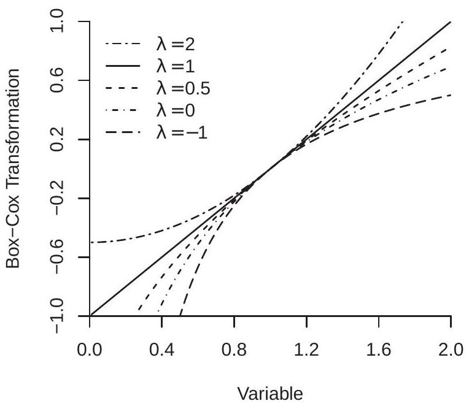
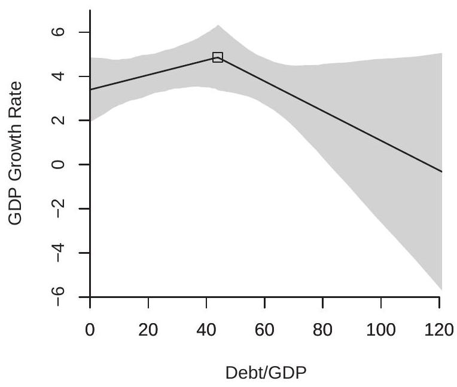
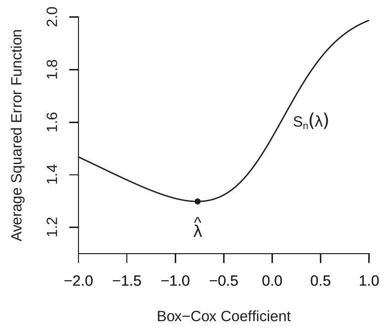
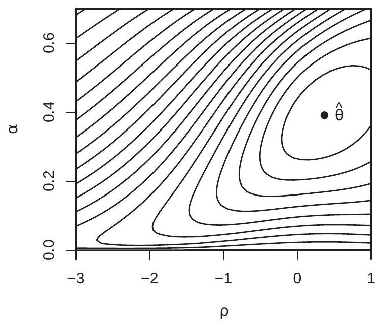
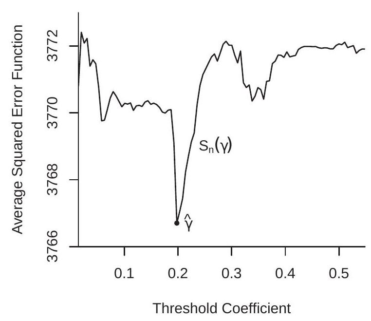
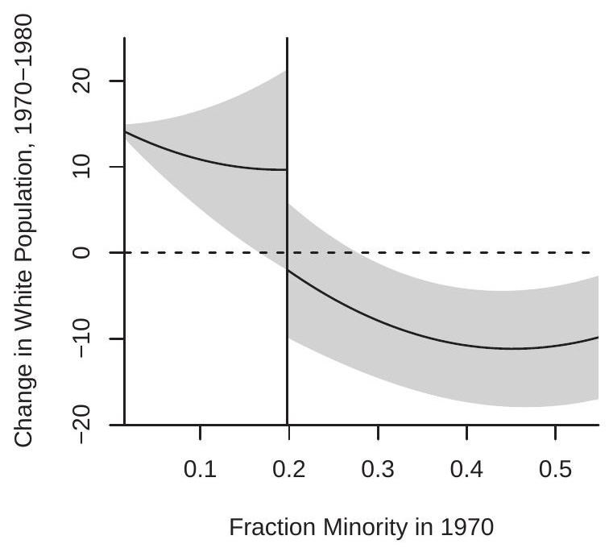
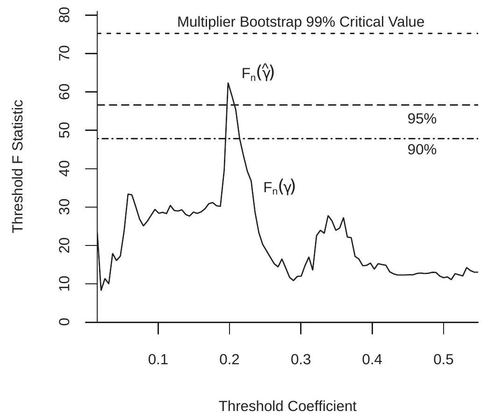

22 Nonlinear Least Squares
22.1 Introduction
A nonlinear regression model is a parametric regression function \(m(x, \theta)=\mathbb{E}[Y \mid X=x]\) which is nonlinear in the parameters \(\theta \in \Theta\). We write the model as
\[ \begin{aligned} Y &=m(X, \theta)+e \\ \mathbb{E}[e \mid X] &=0 . \end{aligned} \]
In nonlinear regression the ordinary least squares estimator does not apply. Instead the parameters are typically estimated by nonlinear least squares (NLLS). NLLS is an m-estimator which requires numerical optimization.
We illustrate nonlinear regression with three examples.
Our first example is the Box-Cox regression model. The Box-Cox transformation (Box and Cox, 1964) for a strictly positive variable \(x>0\) is
\[ x^{(\lambda)}= \begin{cases}\frac{x^{\lambda}-1}{\lambda}, & \text { if } \lambda \neq 0 \\ \log (x), & \text { if } \lambda=0 .\end{cases} \]
The Box-Cox transformation continuously nests linear \((\lambda=1)\) and logarithmic \((\lambda=0)\) functions. Figure 23.1(a) displays the Box-Cox transformation (23.1) over \(x \in(0,2]\) for \(\lambda=2,1,0,0.5,0\), and \(-1\). The parameter \(\lambda\) controls the curvature of the function.
The Box-Cox regression model is
\[ Y=\beta_{0}+\beta_{1} X^{(\lambda)}+e \]
which has parameters \(\theta=\left(\beta_{0}, \beta_{1}, \lambda\right)\). The regression function is linear in \(\left(\beta_{0}, \beta_{1}\right)\) but nonlinear in \(\lambda\).
To illustrate we revisit the reduced form regression (12.87) of risk on \(\log\) (mortality) from Acemoglu, Johnson, and Robinson (2001). A reasonable question is why the authors specified the equation as a regression on \(\log\) (mortality) rather than on mortality. The Box-Cox regression model allows both as special cases, and equals
\[ \text { risk }=\beta_{0}+\beta_{1} \text { mortality }{ }^{(\lambda)}+e . \]
Our second example is a Constant Elasticity of Substitution (CES) production function, which was introduced by Arrow, Chenery, Minhas, and Solow (1961) as a generalization of the popular Cobb-Douglass production function. The CES function for two inputs is
\[ Y=\left\{\begin{array}{cc} A\left(\alpha X_{1}^{\rho}+(1-\alpha) X_{2}^{\rho}\right)^{v / \rho}, & \text { if } \rho \neq 0 \\ A\left(X_{1}^{\alpha} X_{2}^{(1-\alpha)}\right)^{v}, & \text { if } \rho=0 . \end{array}\right. \]
where \(A\) is heterogeneous (random) productivity, \(v>0, \alpha \in(0,1)\), and \(\rho \in(-\infty, 1]\). The coefficient \(v\) is the elasticity of scale. The coefficient \(\alpha\) is the share parameter. The coefficient \(\rho\) is a re-writing \({ }^{1}\) of the elasticity of substitution \(\sigma\) between the inputs and satisfies \(\sigma=1 /(1-\rho)\). The elasticity satisfies \(\sigma>1\) if \(\rho>0\), and \(\sigma<1\) if \(\rho<0\). At \(\rho=0\) we obtain the unit elastic Cobb-Douglas function. Setting \(\rho=1\) and \(v=1\) we obtain a linear production function. Taking the limit \(\rho \rightarrow-\infty\) we obtain the Leontief production function.
Set \(\log A=\beta+e\). The framework implies the regression model
\[ \log Y=\beta+\frac{v}{\rho} \log \left(\alpha X_{1}^{\rho}+(1-\alpha) X_{2}^{\rho}\right)+e \]
with parameters \(\theta=(\rho, v, \alpha, \beta)\).
We illustrate CES production function estimation with a modification of Papageorgiou, Saam, and Schulte (2017). These authors estimate a CES production function for electricity production where \(X_{1}\) is generation capacity using “clean” technology and \(X_{2}\) is generation capacity using “dirty” technology. They estimate the model using a panel of 26 countries for the years 1995 to 2009 . Their goal was to measure the elasticity of substitution between clean and dirty electrical generation. The data file PPS2017 is an extract of the authors’ dataset.
Our third example is the regression kink model. This is essentially a piecewise continuous linear spline where the knot is treated as a free parameter. The model used in our application is the nonlinear AR(1) model
\[ Y_{t}=\beta_{1}\left(X_{t-1}-c\right)_{-}+\beta_{2}\left(X_{t-1}-c\right)_{+}+\beta_{3} Y_{t-1}+\beta_{4}+e_{t} \]
where \((a)_{-}\)and \((a)_{+}\)are the negative-part and positive-part functions, \(c\) is the kink point, and the slopes are \(\beta_{1}\) and \(\beta_{2}\) on the two sides of the kink. The parameters are \(\theta=\left(\beta_{1}, \beta_{2}, \beta_{3}, \beta_{4}, c\right)\). The regression function is linear in \(\left(\beta_{1}, \beta_{2}, \beta_{3}, \beta_{4}\right)\) and nonlinear in \(c\).
We illustrate the regression kink model with an application from B. E. Hansen (2017) which is a formalization of Reinhart and Rogoff (2010). The data are a time-series of annual observations on U.S. real GDP growth \(Y_{t}\) and the ratio of federal debt to GDP \(X_{t}\) for the years 1791-2009. Reinhart-Rogoff were interested in the hypothesis that the growth rate of GDP slows when the level of debt exceeds a threshold. To illustrate, Figure 23.1 (b) displays the regression kink function. The kink \(c=44\) is marked by the square. You can see that the function is upward sloped for \(X<c\) and downward sloped for \(X>c\).
22.2 Identification
The regression model \(m(x, \theta)\) is correctly specified if there exists a parameter value \(\theta_{0}\) such that \(m\left(x, \theta_{0}\right)=\mathbb{E}[Y \mid X=x]\). The parameter is point identified if \(\theta_{0}\) is unique. In correctly-specified nonlinear regression models the parameter is point identified if there is a unique true parameter.
Assume \(\mathbb{E}\left[Y^{2}\right]<\infty\). Since the conditional expectation is the best mean-squared predictor it follows that the true parameter \(\theta_{0}\) satisfies the optimization expression
\[ \theta_{0}=\underset{\theta \in \Theta}{\operatorname{argmin}} S(\theta) \]
\({ }^{1}\) It is tempting to write the model as a function of the elasticity of substitution \(\sigma\) rather than its transformation \(\rho\). However this is unadvised as it renders the regression function more nonlinear and difficult to optimize.

- Box-Cox Transformation

- Regression Kink Model
Figure 23.1: Nonlinear Regression Models
where
\[ S(\theta)=\mathbb{E}\left[(Y-m(X, \theta))^{2}\right] \]
is the expected squared error. This expresses the parameter as a function of the distribution of \((Y, X)\).
The regression model is mis-specified if there is no \(\theta\) such that \(m(x, \theta)=\mathbb{E}[Y \mid X=x]\). In this case we define the pseudo-true value \(\theta_{0}\) as the best-fitting parameter (23.5). It is difficult to give general conditions under which the solution is unique. Hence identification of the pseudo-true value under mis-specification is typically assumed rather than deduced.
22.3 Estimation
The analog estimator of the expected squared error \(S(\theta)\) is the sample average of squared errors
\[ S_{n}(\theta)=\frac{1}{n} \sum_{i=1}^{n}\left(Y_{i}-m\left(X_{i}, \theta\right)\right)^{2} . \]
Since \(\theta_{0}\) minimizes \(S(\theta)\) its analog estimator minimizes \(S_{n}(\theta)\)
\[ \widehat{\theta}_{\mathrm{nlls}}=\underset{\theta \in \Theta}{\operatorname{argmin}} S_{n}(\theta) . \]
This is called the Nonlinear Least Squares (NLLS) estimator. It includes OLS as the special case when \(m\left(X_{i}, \theta\right)\) is linear in \(\theta\). It is an m-estimator with \(\rho_{i}(\theta)=\left(Y_{i}-m\left(X_{i}, \theta\right)\right)^{2}\).
As \(S_{n}(\theta)\) is a nonlinear function of \(\theta\) in general there is no explicit algebraic expression for the solution \(\widehat{\theta}_{\text {nlls. }}\) Instead it is found by numerical minimization. Chapter 12 of Probability and Statistics for Economists provides an overview. The NLLS residuals are \(\widehat{e}_{i}=Y_{i}-m\left(X_{i}, \widehat{\theta}_{\text {nlls }}\right)\).
In some cases, including our first and third examples in Section 23.1, the model \(m(x, \theta)\) is linear in most of the parameters. In these cases a computational shortcut is to use nested minimization (also known as concentration or profiling). Take Example 1 (Box-Cox Regression). Given the Box-Cox parameter \(\lambda\) the regression is linear. The coefficients \(\left(\beta_{0}, \beta_{1}\right)\) can be estimated by least squares, obtaining the residuals and sample concentrated average of squared errors \(S_{n}^{*}(\lambda)\). The latter can be minimized using one-dimensional methods. The minimizer \(\hat{\lambda}\) is the NLLS estimator of \(\lambda\). Given \(\hat{\lambda}_{\text {nlls }}\), the NLLS coefficient estimators \(\left(\widehat{\beta}_{0}, \widehat{\beta}_{1}\right)\) are found by OLS regression of \(Y_{i}\) on a constant and \(X_{i}^{(\widehat{\lambda})}\).

- Box-Cox Regression

- CES Production Function
Figure 23.2: Average of Squared Errors Functions
We illustrate with two of our examples.
Figure 23.2(a) displays the concentrated average of squared errors \(S_{n}^{*}(\lambda)\) for the Box-Cox regression model applied to (23.2), displayed as a function of the Box-Cox parameter \(\lambda\). You can see that \(S_{n}^{*}(\lambda)\) is neither quadratic nor globally convex, but has a well-defined minimum at \(\widehat{\lambda}=-0.77\). This is a parameter value which produces a regression model considerably more curved than the logarithm specification used by Acemoglou et. al.
Figure 23.2(b) displays the average of squared errors for the CES production function application, displayed as a function of \((\rho, \alpha)\) with the other parameters set at the minimizer. You can see that the minimum is obtained at \((\widehat{\rho}, \widehat{\alpha})=(.36, .39)\). We have displayed the function \(S_{n}(\rho, \alpha)\) by its contour surfaces. A quadratic function has elliptical contour surfaces. You can see that the function appears to be close to quadratic near the minimum but becomes increasingly non-quadratic away from the minimum.
The parameter estimates and standard errors for the three models are presented in Table 23.1. Standard error calculation will be discussed in Section 23.5. The standard errors for the Box-Cox and Regression Kink models were calculated using the heteroskedasticity-robust formula, and those for the CES production function were calculated by the cluster-robust formula, clustering by country.
Take the Box-Cox regression. The estimate \(\hat{\lambda}=-0.77\) shows that the estimated relationship between risk and mortality has stronger curvature than the logarithm function, and the estimate \(\widehat{\beta}_{1}=-17\) is negative as predicted. The large standard error for \(\widehat{\beta}_{1}\), however, indicates that the slope coefficient is not precisely estimated.
Take the CES production function. The estimate \(\widehat{\rho}=0.36\) is positive, indicating that clean and dirty technologies are substitutes. The implied elasticity of substitution \(\sigma=1 /(1-\rho)\) is \(\widehat{\sigma}=1.57\). The estimated Table 23.1: NLLS Estimates of Example Models
| \(\lambda\) | \(-0.77\) | \(0.28\) | |
|---|---|---|---|
| CES Production Function | \(\rho\) | \(0.36\) | \(0.29\) |
| \(v\) | \(1.05\) | \(0.03\) | |
| \(\alpha\) | \(0.39\) | \(0.06\) | |
| \(\beta\) | \(1.66\) | \(0.31\) | |
| \(\sigma\) | \(1.57\) | \(0.46\) | |
| Regression Kink Regression | \(\beta_{1}\) | \(0.033\) | \(0.026\) |
| \(\beta_{2}\) | \(-0.067\) | \(0.046\) | |
| \(\beta_{3}\) | \(0.28\) | \(0.09\) | |
| \(\beta_{4}\) | \(3.78\) | \(0.68\) | |
| \(c\) | \(43.9\) | \(11.8\) |
elasticity of scale \(\widehat{v}=1.05\) is slightly above one, consistent with increasing returns to scale. The share parameter for clean technology \(\widehat{\alpha}=0.39\) is somewhat less than one-half, indicating that dirty technology is the dominating input.
Take the regression kink function. The estimated slope of GDP growth for low debt levels \(\widehat{\beta}_{1}=0.03\) is positive, and the estimated slope for high debt levels \(\widehat{\beta}_{2}=-0.07\) is negative. This is consistent with the Reinhart-Rogoff hypothesis that high debt levels lead to a slowdown in economic growth. The estimated kink point is \(\widehat{c}=44 %\) which is considerably lower than the postulated \(90 %\) kink point suggested by Reinhart-Rogoff based on their informal analysis.
Interpreting conventional t-ratios and p-values in nonlinear models should be done thoughtfully. This is a context where the annoying empirical custom of appending asterisks to all “significant” coefficient estimates is particularly inappropriate. Take, for example, the CES estimates in Table 23.1. The “t-ratio” for \(v\) is for the test of the hypothesis that \(v=0\), which is a meaningless hypothesis. Similarly the t-ratio for \(\alpha\) is for an uninteresting hypothesis. It does not make sense to append asterisks to these estimates and describe them as “significant” as there is no reason to take 0 as an interesting value for the parameter. Similarly in the Box-Cox regression there is no reason to take \(\lambda=0\) as an important hypothesis. In the Regression Kink model the hypothesis \(c=0\) is generally meaningless and could easily lie outside the parameter space.
22.4 Asymptotic Distribution
We first consider the consistency of the NLLS estimator. We appeal to Theorems \(22.3\) and \(22.4\) for m-estimators.
Assumption $23.1
\(\left(Y_{i}, X_{i}\right)\) are i.i.d.
\(m(X, \theta)\) is continuous in \(\theta \in \Theta\) with probability one.
\(\mathbb{E}\left[Y^{2}\right]<\infty\).
\(|m(X, \theta)| \leq m(X)\) with \(\mathbb{E}\left[m(X)^{2}\right]<\infty\).
\(\Theta\) is compact.
For all \(\theta \neq \theta_{0}, S(\theta)>S\left(\theta_{0}\right)\).
Assumptions 1-4 are fairly standard. Assumption 5 is not essential but simplifies the proof. Assumption 6 is critical. It states that the minimizer \(\theta_{0}\) is unique.
Theorem 23.1 Consistency of NLLS Estimator If Assumption \(23.1\) holds then \(\widehat{\theta} \underset{p}{\longrightarrow} \theta_{0}\) as \(n \rightarrow \infty\).
We next discuss the asymptotic distribution for differentiable models. We first present the main result, then discuss the assumptions. Set \(m_{\theta}(x, \theta)=\frac{\partial}{\partial \theta} m(x, \theta), m_{\theta \theta}(x, \theta)=\frac{\partial^{2}}{\partial \theta \partial \theta^{\prime}} m(x, \theta)\), and \(m_{\theta i}=\) \(m_{\theta}\left(X_{i}, \theta_{0}\right)\). Define \(\boldsymbol{Q}=\mathbb{E}\left[m_{\theta i} m_{\theta i}^{\prime}\right]\) and \(\Omega=\mathbb{E}\left[m_{\theta i} m_{\theta i}^{\prime} e_{i}^{2}\right]\)
Assumption \(23.2\) For some neighborhood \(\mathscr{N}\) of \(\theta_{0}\),
\(\mathbb{E}[e \mid X]=0\).
\(\mathbb{E}\left[Y^{4}\right]<\infty\).
\(m(x, \theta)\) and \(m_{\theta}(X, \theta)\) are differentiable in \(\theta \in \mathcal{N}\).
\(\mathbb{E}|m(X, \theta)|^{4}<\infty, \mathbb{E}\left\|m_{\theta}(X, \theta)\right\|^{4}<\infty\), and \(\mathbb{E}\left\|m_{\theta \theta}(X, \theta)\right\|^{4}<\infty\) for \(\theta \in \mathcal{N}\).
\(\boldsymbol{Q}=\mathbb{E}\left[m_{\theta i} m_{\theta i}^{\prime}\right]>0\).
\(\theta_{0}\) is in the interior of \(\Theta\).
Assumption 1 imposes that the model is correctly specified. If we relax this assumption the asymptotic distribution is still normal but the covariance matrix changes. Assumption 2 is a moment bound needed for asymptotic normality. Assumption 3 states that the regression function is second-order differentiable. This can be relaxed but with a complication of the conditions and derivation. Assumption 4 states moment bounds on the regression function and its derivatives. Assumption 5 states that the “linearized regressor” \(m_{\theta i}\) has a full rank population design matrix. If this assumption fails then \(m_{\theta i}\) will be multicollinear. Assumption 6 requires that the parameters are not on the boundary of the parameter space. This is important as otherwise the sampling distribution will be asymmetric.
Theorem $23.2 Asymptotic Normality of NLLS Estimator If Assumptions \(23.1\) and \(23.2\) hold then \(\sqrt{n}\left(\widehat{\theta}-\theta_{0}\right) \underset{d}{\longrightarrow} \mathrm{N}(0, \boldsymbol{V})\) as \(n \rightarrow \infty\), where \(V=Q^{-1} \Omega Q^{-1}\)
Theorem \(23.2\) shows that under general conditions the NLLS estimator has an asymptotic distribution with similar structure to that of the OLS estimator. The estimator converges at a conventional rate to a normal distribution with a sandwich-form covariance matrix. Furthermore, the asymptotic variance is identical to that in a hypothetical OLS regression with the linearized regressor \(m_{\theta i}\). Thus, asymptotically, the distribution of NLLS is identical to a linear regression.
The asymptotic distribution simplifies under conditional homoskedasticity. If \(\mathbb{E}\left[e^{2} \mid X\right]=\sigma^{2}\) then the asymptotic variance is \(\boldsymbol{V}=\sigma^{2} \boldsymbol{Q}^{-1}\).
22.5 Covariance Matrix Estimation
The asymptotic covariance matrix \(\boldsymbol{V}\) is estimated similarly to linear regression with the adjustment that we use an estimate of the linearized regressor \(m_{\theta i}\). This estimate is
\[ \widehat{m}_{\theta i}=m_{\theta}\left(X_{i}, \widehat{\theta}\right)=\frac{\partial}{\partial \theta} m\left(X_{i}, \widehat{\theta}\right) . \]
It is best if the derivative is calculated algebraically but a numerical derivative (a discrete derivative) can substitute.
Take, for example, the Box-Cox regression model for which \(m\left(x, \beta_{0}, \beta_{1}, \lambda\right)=\beta_{0}+\beta_{1} x^{(\lambda)}\). We calculate that for \(\lambda \neq 0\)
\[ m_{\theta}\left(x, \beta_{0}, \beta_{1}, \lambda\right)=\left(\begin{array}{c} \frac{\partial}{\partial \beta_{0}}\left(\beta_{0}+\beta_{1} x^{(\lambda)}\right) \\ \frac{\partial}{\partial \beta_{1}}\left(\beta_{0}+\beta_{1} x^{(\lambda)}\right) \\ \frac{\partial}{\partial \beta_{\lambda}}\left(\beta_{0}+\beta_{1} x_{i}^{(\lambda)}\right) \end{array}\right)=\left(\begin{array}{c} 1 \\ x^{(\lambda)} \\ \frac{x^{\lambda} \log (x)-x^{(\lambda)}}{\lambda} \end{array}\right) . \]
For \(\lambda=0\) the third entry is \(\log ^{2}(x) / 2\). The estimate is obtained by replacing \(\lambda\) with the estimator \(\hat{\lambda}\). Hence for \(\widehat{\lambda} \neq 0\)
\[ \widehat{m}_{\theta i}=\left(\begin{array}{c} 1 \\ x^{(\widehat{\lambda})} \\ \frac{1-x^{\hat{\lambda}}+\lambda x^{\hat{\lambda}} \log (x)}{\hat{\lambda}^{2}} \end{array}\right) . \]
The covariance matrix components are estimated as
\[ \begin{aligned} \widehat{\boldsymbol{Q}} &=\frac{1}{n} \sum_{i=1}^{n} \widehat{m}_{\theta i} \widehat{m}_{\theta i}^{\prime} \\ \widehat{\Omega}=\frac{1}{n} \sum_{i=1}^{n} \widehat{m}_{\theta i} \widehat{m}_{\theta i}^{\prime} \widehat{e}_{i}^{2} \\ \widehat{\boldsymbol{V}} &=\widehat{\boldsymbol{Q}}^{-1} \widehat{\Omega} \widehat{\boldsymbol{Q}}^{-1} \end{aligned} \]
where \(\widehat{e}_{i}=Y_{i}-m\left(X_{i}, \widehat{\theta}\right)\) are the NLLS residuals. Standard errors are calculated conventionally as the square roots of the diagonal elements of \(n^{-1} \widehat{\boldsymbol{V}}\).
If the error is homoskedastic the covariance matrix can be estimated using the formula
\[ \begin{aligned} \widehat{\boldsymbol{V}}^{0} &=\widehat{\boldsymbol{Q}}^{-1} \widehat{\sigma}^{2} \\ \widehat{\sigma}^{2} &=\frac{1}{n} \sum_{i=1}^{n} \widehat{e}_{i}^{2} . \end{aligned} \]
If the observations satisfy cluster dependence then a standard cluster variance estimator can be used, again treating the linearized regressor estimate \(\widehat{m}_{\theta i}\) as the effective regressor.
To illustrate, standard errors for our three estimated models are displayed in Table 23.1. The standard errors for the first and third models were calculated using the formula (23.6). The standard errors for the CES model were clustered by country.
In small samples the standard errors for NLLS may not be reliable. An alternative is to use bootstrap methods for inference. The nonparametric bootstrap draws with replacement from the observation pairs \(\left(Y_{i}, X_{i}\right)\) to create bootstrap samples, to which NLLS is applied to obtain bootstrap parameter estimates \(\widehat{\theta}^{*}\). From \(\widehat{\theta}^{*}\) we can calculate bootstrap standard errors and/or bootstrap confidence intervals, for example by the bias-corrected percentile method.
22.6 Panel Data
Consider the nonlinear regression model with an additive individual effect
\[ \begin{aligned} Y_{i t} &=m\left(X_{i t}, \theta\right)+u_{i}+\varepsilon_{i t} \\ \mathbb{E}\left[\varepsilon_{i t} \mid X_{i t}\right] &=0 . \end{aligned} \]
To eliminate the individual effect we can apply the within or first-differencing transformations. Applying the within transformation we obtain
\[ \dot{Y}_{i t}=\dot{m}\left(X_{i t}, \theta\right)+\dot{\varepsilon}_{i t} \]
where
\[ \dot{m}\left(X_{i t}, \theta\right)=m\left(X_{i t}, \theta\right)-\frac{1}{T_{i}} \sum_{t \in S_{i}} m\left(X_{i t}, \theta\right) \]
using the panel data notation. Thus \(\dot{m}\left(X_{i t}, \theta\right)\) is the within transformation applied to \(m\left(X_{i t}, \theta\right)\). It is not \(m\left(\dot{X}_{i t}, \theta\right)\). Equation (23.7) is a nonlinear panel model. The coefficient can be estimated by NLLS. The estimator is appropriate when \(X_{i t}\) is strictly exogenous, as \(\dot{m}\left(X_{i t}, \theta\right)\) is a function of \(X_{i s}\) for all time periods.
An alternative is to apply the first-difference transformation. Thus yields
\[ \Delta Y_{i t}=\Delta m\left(X_{i t}, \theta\right)+\Delta \varepsilon_{i t} \]
where \(\Delta m\left(X_{i t}, \theta\right)=m\left(X_{i t}, \theta\right)-m\left(X_{i, t-1}, \theta\right)\). Equation (23.8) can be estimated by NLLS. Again this requires that \(X_{i t}\) is strictly exogenous for consistent estimation.
If the regressors \(X_{i t}\) contains a lagged dependent variable \(Y_{i, t-1}\) then NLLS is not an appropriate estimator. GMM can be applied to (23.8) similar to linear dynamic panel regression models.
22.7 Threshold Models
An extreme example of nonlinear regression is the class of threshold regression models. These are discontinuous regression models where the kink points are treated as free parameters. They have been used succesfully in economics to model threshold effects and tipping points. They are also the core tool for the modern machine learning methods of regression trees and random forests. In this section we provide a review.
A threshold regression model takes the form
\[ \begin{aligned} Y &=\beta_{1}^{\prime} X_{1}+\beta_{2}^{\prime} X_{2} \mathbb{1}\{Q \geq \gamma\}+e \\ \mathbb{E}[e \mid X] &=0 \end{aligned} \]
where \(X_{1}\) and \(X_{2}\) are \(k_{1} \times 1\) and \(k_{2} \times 1\), respectively, and \(Q\) is scalar. The variable \(Q\) is called the threshold variable and \(\gamma\) is called the threshold.
Typically, both \(X_{1}\) and \(X_{2}\) contain an intercept, and \(X_{2}\) and \(Q\) are subsets of \(X_{1}\). In the latter case \(\beta_{2}\) is the change in the slope at the threshold. The threshold variable \(Q\) should be either continuously distributed or ordinal.
In a full threshold specification \(X_{1}=X_{2}=X\). In this case all coefficients switch at the threshold. This regression can alternatively be written as
\[ Y=\left\{\begin{array}{cc} \theta_{1}^{\prime} X+e, & Q<\gamma \\ \theta_{2}^{\prime} X+e, & Q \geq \gamma \end{array}\right. \]
where \(\theta_{1}=\beta_{1}\) and \(\theta_{2}=\beta_{1}+\beta_{2}\).
A simple yet full threshold model arises when there is only a single regressor \(X\). The regression can be written as
\[ Y=\alpha_{1}+\beta_{1} X+\alpha_{2} \mathbb{1}\{X \geq \gamma\}+\beta_{2} X \mathbb{1}\{X \geq \gamma\}+e . \]
This resembles a Regression Kink model, but is more general as it allows for a discontinuity at \(X=\gamma\). The Regression Kink model imposes the restriction \(\alpha+\beta \gamma=0\).
A threshold model is most suitable for a context where an economic model predicts a discontinuity in the CEF. It can also be used as a flexible approximation for a context where it is believed the CEF has a sharp nonlinearity with respect to one variable, or has sharp interaction effects. The Regression Kink model, for example, does not allow for kink interaction effects.
The threshold model is critically dependent on the choice of threshold variable \(Q\). This variable controls the ability of the regression model to display nonlinearity. In principle this can be generalized by incorporating multiple thresholds in potentially different variables but this generalization is limited by sample size and information.
The threshold model is linear in the coefficients \(\beta=\left(\beta_{1}, \beta_{2}\right)\) and nonlinear in \(\gamma\). The parameter \(\gamma\) is of critical importance as it determines the model’s nonlinearity - the sample split.
Many empirical applications estimate threshold models using informal ad hoc methods. What you may see is a splitting of the sample into “subgroups” based on regressor characteristics. When the latter split is based on a continuous regressor the split point is exactly a threshold parameter. When you see such tables it is prudent to be skeptical. How was this threshold parameter selected? Based on intuition? Or based on data exploration? If the former do you expect the results to be informative? If the latter should you trust the reported tests?
To illustrate threshold regression we review an influential paper by Card, Mas and Rothstein (2008). They were interested in the process of racial segregation in U.S. cities. A common hypothesis concerning the behavior of white Americans is that they are only comfortable living in a neighborhood if it has a small percentage of minority residents. A simple model of this behavior (explored in their paper) predicts that this preference leads to an unstable mixed-race equilibrium in the fraction of minorities. They call this equilibrium the tipping point. If the minority fraction exceeds this tipping point the outcome will change discontinuously. The economic mechanism is that if minorities move into a neighborhood at a roughly continuous rate, when the tipping point is reached there will be a surge in exits by white residents who elect to move due to their discomfort. This predicts a threshold regression with a discontinuity at the tipping point. The data file CMR2008 is an abridged version of the authors’ dataset.

- Estimation Criterion

- Threshold Regression Estimates
Figure 23.3: Threshold Regression - Card-Mas-Rothstein (2008) Model
The authors use a specification similar to the following
\[ \begin{aligned} \Delta W_{c i t} &=\delta_{0} \mathbb{1}\left\{M_{c i t-1} \geq \gamma\right\}+\delta_{1}\left(M_{c i t-1}-\gamma\right) \mathbb{1}\left\{M_{c i t-1} \geq \gamma\right\} \\ &+\beta_{1} M_{c i t-1}+\beta_{2} M_{c i t-1}^{2}+\theta^{\prime} X_{c i t-1}+\alpha+u_{c}+e_{c i t} \end{aligned} \]
where \(c\) is the city (MSA),\(i\) is a census tract within the city, \(t\) is the time period (decade), \(\Delta W_{c i t}\) is the white population percentage change in the tract over the decade, \(M_{c i t}\) is the fraction of minorties in the tract, \(u_{c}\) is a fixed effect for the city, and \(X_{c i t}\) are tract-level regression controls. The sample is based on Census data which is collected at ten-year intervals. They estimate models for three decades; we focus on 1970-1980. Thus \(\Delta W_{c i t}\) is the change in white population over the period 1970-1980 and the remaining variables are for 1970 . The controls used in the regression are the unemployment rate, the log mean family income, housing vacancy rate, renter share, fraction of homes in single-unit buildings, and fraction of workers who commute by public transport. This model has \(n=35,656\) observations and \(N=104\) cities. This specification allows the relationship between \(\Delta W\) and \(M\) to be nonlinear (a quadratic) with a discontinuous shift in the intercept and slope at the threshold. The authors’ major prediction is that \(\delta_{0}\) should be large and negative. The threshold parameter \(\gamma\) is the minority fraction which triggers discontinuous white outward migration.
\({ }^{2}\) Metropolitan Statistical Area (MSA). The authors use the 104 MSAs with at least 100 census tracts. As the threshold regression model is an explicit nonlinear regression, the appropriate estimation method is NLLS. Since the model is linear in all coefficients except for \(\gamma\), the best computational technique is concentrated least squares. For each \(\gamma\) the model is linear and the coefficients can be estimated by least squares. This produces a concentrated average of squared errors \(S_{n}^{*}(\gamma)\) which can be minimized to find the NLLS estimator \(\widehat{\gamma}\). To illustrate, the concentrated least squares criterion for the Card-Mas-Rothstein dataset \({ }^{3}\) is displayed in Figure 23.3(a). As you can see, the criterion \(S_{n}^{*}(\gamma)\) is highly non-smooth. This is typical in threshold applications. Consequently, the criterion needs to be minimized by grid search. The criterion is a step function with a step at each observation. A full search would calculate \(S_{n}^{*}(\gamma)\) for \(\gamma\) equalling each value of \(M_{c i t-1}\) in the sample. A simplification (which we employ) is to calculate the criterion at a smaller number of gridpoints. In our illustration we use 100 gridpoints equally-spaced between the \(0.1\) and \(0.9\) quantiles \({ }^{4}\) of \(M_{c i t-1}\). (These quantiles are the boundaries of the displayed graph.) What you can see is that the criterion is generally lower for values of \(\gamma\) between \(0.05\) and \(0.25\), and especially lower for values of \(\gamma\) near \(0.2\). The minimum is obtained at \(\widehat{\gamma}=0.198\). This is the NLLS estimator. In the context of the application this means that the point estimate of the tipping point is \(20 %\), which means that when the neighborhood minority fraction exceeds \(20 %\) white households discontinuously change their behavior. The remaining NLLS estimates are obtained by least squares regression (23.9) setting \(\gamma=\widehat{\gamma}\).
Our estimates are reported in Table 23.2. Following Card, Mas, and Rothstein (2008) the standard errors are clustered \({ }^{5}\) by city (MSA). Examining Table \(23.2\) we can see that the estimates suggest that neighborhood declines in the white population were increasing in the minority fraction, with a sharp and accelerating decline above the tipping point of \(20 %\). The estimated discontinuity is \(-11.6 %\). This is nearly identical to the estimate obtained by Card, Mas and Rothstein (2008) using an ad hoc estimation method.
The white population was also decreasing in response to the unemployment rate, the renter share, and the use of public transportation, but increasing in response to the vacancy rate. Another interesting observation is that despite the fact that the sample has a very large \((35,656)\) number of observations the standard errors for the parameter estimates are rather large indicating considerable imprecision. This is mostly due to the clustered covariance matrix calculation as there are only \(N=104\) clusters.
The asymptotic theory of threshold regression is non-standard. Chan (1993) showed that under correct specification the threshold estimator \(\widehat{\gamma}\) converges in probability to \(\gamma\) at the fast rate \(O_{p}\left(n^{-1}\right)\) and that the other parameter estimators have conventional asymptotic distributions, justifying the standard errors as reported in Table 23.2. He also showed that the threshold estimator \(\widehat{\gamma}\) has a non-standard asymptotic distribution which cannot be used for confidence interval construction.
B. E. Hansen (2000) derived the asymptotic distribution of \(\widehat{\gamma}\) and associated test statistics under a “small threshold effect” asymptotic framework for a continuous threshold variable \(Q\). This distribution theory permits simple construction of an asymptotic confidence interval for \(\gamma\). In brief, he shows that under correct specification, independent observations, and homoskedasticity, the F statistic for testing
\({ }^{3}\) Using the 1970-1980 sample and model (23.9).
\({ }^{4}\) It is important that the search be constrained to values of \(\gamma\) which lie well within the support of the threshold variable. Otherwise the regression may be infeasible. The required degree of trimming (away from the boundaries of the support) depends on the individual application.
\({ }^{5}\) It is not clear to me whether clustering is appropriate in this application. One motivation for clustering is inclusion of fixed effects as this induces correlation across observations within a cluster. However in this case the typical number of observations per cluster is several hundred so this correlation is near zero. Another motivation for clustering is that the regression error \(e_{c i t}\) (the unobserved factors for changes in white population) is correlated across tracts within a city. While it may be expected that attitudes towards minorities among whites may be correlated within a city, it seems less clear that we should expect unconditional correlation in population changes. Table 23.2: Threshold Estimates: Card-Mas-Rothstein (2008) Model
| Variable | Estimate | Standard Error |
|---|---|---|
| Intercept Change | \(-11.6\) | \(3.7\) |
| Slope Change | \(-74.1\) | \(42.6\) |
| Minority Fraction | \(-54.4\) | \(28.8\) |
| Minority Fraction \({ }^{2}\) | \(142.3\) | \(23.9\) |
| Unemployment Rate | \(-81.1\) | \(38.8\) |
| \(\log (\) Mean Family Income) | \(3.4\) | \(3.6\) |
| Housing Vacancy Rate | \(324.9\) | \(40.2\) |
| Renter Share | \(-62.7\) | \(13.6\) |
| Fraction Single-Unit | \(-4.8\) | \(9.5\) |
| Fraction Public Transport | \(-91.6\) | \(24.5\) |
| Intercept | \(14.8\) | na |
| MSA Fixed Effects | yes | |
| Threshold | \(0.198\) | |
| \(99 %\) Confidence Interval | \([0.198,0.209]\) | |
| \(N=\) Number of MSAs | 104 | |
| \(n=\) Number of observations | 35,656 |
the hypothesis \(\mathbb{H}_{0}: \gamma=\gamma_{0}\) has the asymptotic distribution
\[ \frac{n\left(S_{n}^{*}\left(\gamma_{0}\right)-S_{n}^{*}(\widehat{\gamma})\right)}{S_{n}^{*}(\widehat{\gamma})} \underset{d}{\longrightarrow} \xi \]
where \(\mathbb{P}[\xi \leq x]=(1-\exp (-x / 2))^{2}\). The \(1-\alpha\) quantile of \(\xi\) can be found by solving \(\left(1-\exp \left(-c_{1-\alpha} / 2\right)\right)^{2}=\) \(1-\alpha\), and equals \(c_{1-\alpha}=-2 \log (1-\sqrt{1-\alpha})\). For example, \(c_{.95}=7.35\) and \(c_{.99}=10.6\).
Based on test inversion a valid \(1-\alpha\) asymptotic confidence interval for \(\gamma\) is the set of \(F\) statistics which are less than \(c_{1-\alpha}\) and equals
\[ C_{1-\alpha}=\left\{\gamma: \frac{n\left(S_{n}^{*}(\gamma)-S_{n}^{*}(\widehat{\gamma})\right)}{S_{n}^{*}(\widehat{\gamma})} \leq c_{1-\alpha}\right\}=\left\{\gamma: S_{n}^{*}(\gamma) \leq S_{n}^{*}(\widehat{\gamma})\left(1+\frac{c_{1-\alpha}}{n}\right)\right\} \]
This is constructed numerically by grid search. In our example \(C_{0.99}=[0.198,0.209]\). This is a narrow confidence interval. However, this interval does not take into account clustered dependence. Based on Hansen’s theory we can expect that under cluster dependence the asymptotic distribution \(\xi\) needs to be re-scaled. This will result in replacing \(1+c_{1-\alpha} / n\) in the above formula with \(1+\rho c_{1-\alpha} / n\) for some adjustment factor \(\rho\). This will widen the confidence interval. Based on the shape of Figure \(23.3(\mathrm{a})\) the adjusted confidence interval may not be too wide. However this is a conjecture as the theory has not been worked out so we cannot estimate the adjustment factor \(\rho\).
Empirical practice and simulation results suggest that threshold estimates tend to be quite imprecise unless a moderately large sample (e.g., \(n \geq 500\) ) is used. The threshold parameter is identified by observations close to the threshold, not by observations far from the threshold. This requires large samples to ensure that there are a sufficient number of observations near the threshold in order to be able to pin down its location
Given the coefficient estimates the regression function can be plotted along with confidence intervals calculated conventionally. In Figure 23.3(b) we plot the estimated regression function with \(95 %\) asymptotic confidence intervals calculated based on the covariance matrix for the estimates \(\left(\widehat{\beta}_{1}, \widehat{\beta}_{2}, \widehat{\delta}_{1}, \widehat{\delta}_{2}\right)\). The estimate \(\widehat{\theta}\) does not contribute if the regression function is evaluated at mean values. We ignore estimation of the intercept \(\widehat{\alpha}\) as its variance is not identified under clustering dependence and we are primarily interest in the magnitude of relative comparisons. What we see in Figure 23.3(b) is that the regression function is generally downward sloped, indicating that the change in the white population is generally decreasing as the minority fraction increases, as expected. The tipping effect is visually strong. When the fraction minority crosses the tipping point there are sharp decreases in both the level and the slope of the regression function. The level of the estimated regression function also indicates that the expected change in the white population switches from positive to negative at the tipping point, consistent with the segregation hypothesis. It is instructive to observe that the confidence bands are quite wide despite the large sample. This is largely due to the decision to use a clustered covariance matrix estimator. Consequently there is considerable uncertainty in the location of the regression function. The confidence bands are widest at the estimated tipping point.
The empirical results presented in this section are distinct from, yet similar to, those reported in Card, Mas, and Rothstein (2008). This is an influential paper as it used the rigor of an economic model to give insight about segregation behavior, and used a rich detailed dataset to investigate the strong tipping point prediction.
22.8 Testing for Nonlinear Components
Identification can be tricky in nonlinear regression models. Suppose that
\[ m(X, \theta)=X^{\prime} \beta+X(\gamma)^{\prime} \delta \]
where \(X(\gamma)\) is a function of \(X\) and an unknown parameter \(\gamma\). Examples for \(X(\gamma)\) include the Box-Cox transformation and \(X \mathbb{1}\{X>\gamma\}\). The latter arises in the Regression Kink and threshold regression models.
The model is linear when \(\delta=0\). This is often a useful hypothesis (sub-model) to consider. For example, in the Card-Mas-Rothstein (2008) application this is the hypothesis of no tipping point which is the key issue explored in their paper.
In this section we consider tests of the hypothesis \(\mathbb{H}_{0}: \delta=0\). Under \(\mathbb{H}_{0}\) the model is \(Y=X^{\prime} \beta+e\) and both \(\delta\) and \(\gamma\) have dropped out. This means that under \(\mathbb{H}_{0}\) the parameter \(\gamma\) is not identified. This renders standard distribution theory invalid. When the truth is \(\delta=0\) the NLLS estimator of \((\beta, \delta, \gamma)\) is not asymptotically normally distributed. Classical tests excessively over-reject \(\mathbb{H}_{0}\) if applied with conventional critical values.
As an example consider the threshold regression (23.9). The hypothesis of no tipping point corresponds to the joint hypothesis \(\delta_{0}=0\) and \(\delta_{1}=0\). Under this hypothesis the parameter \(\gamma\) is not identified.
To test the hypothesis a standard test is to reject for large values of the F statistic
\[ \mathrm{F}=\frac{n\left(\widetilde{S}_{n}-S_{n}^{*}(\widehat{\gamma})\right)}{S_{n}^{*}(\widehat{\gamma})} \]
where \(\widetilde{S}_{n}=n^{-1} \sum_{i=1}^{n}\left(Y_{i}-X_{i}^{\prime} \widehat{\beta}\right)^{2}\) and \(\widehat{\beta}\) is the least squares coefficient from the regression of \(Y\) on \(X\). This is the difference between the error variance estimators based on estimates calculated under the null \(\left(\widetilde{S}_{n}\right)\) and alternative \(\left(S_{n}^{*}(\widehat{\gamma})\right)\).
The F statistic can be written as
\[ \mathrm{F}=\max _{\gamma} \mathrm{F}_{n}(\gamma)=\mathrm{F}_{n}(\widehat{\gamma}) \]
where
\[ \mathrm{F}_{n}(\gamma)=\frac{n\left(\widetilde{S}_{n}-S_{n}^{*}(\gamma)\right)}{S_{n}^{*}(\gamma)} \]
The statistic \(\mathrm{F}_{n}(\gamma)\) is the classical \(\mathrm{F}\) statistic for a test of \(\mathbb{H}_{0}: \delta=0\) when \(\gamma\) is known. We can see from this representation that \(\mathrm{F}\) is non-standard as it is the maximum over a potentially large number of statistics \(\mathrm{F}_{n}(\gamma)\)

Figure 23.4: Test for Threshold Regression in CMR Model
To illustrate, Figure \(23.4\) plots the test statistic \(\mathrm{F}_{n}(\gamma)\) as a function of \(\gamma\). You can see that the function is erratic, similar to the concentrated criterion \(S_{n}^{*}(\gamma)\). This is sensible, because \(\mathrm{F}_{n}(\gamma)\) is an affine function of the inverse of \(S_{n}^{*}(\gamma)\). The statistic is maximized at \(\widehat{\gamma}\) because of this duality. The maximum value is \(\mathrm{F}=\mathrm{F}_{n}(\hat{\gamma})\). In this application we find \(\mathrm{F}=62.4\). This is extremely high by conventional standards.
The asymptotic theory of the test has been worked out by Andrews and Ploberger (1994) and B. E. Hansen (1996). In particular, Hansen shows the validity of the multiplier bootstrap for calculation of p-values for independent observations. The method is as follows.
On the observations \(\left(Y_{i}, X_{i}\right)\) calculate the \(\mathrm{F}\) test statistic for \(\mathbb{H}_{0}\) against \(\mathbb{H}_{1}\) (or any other standard statistic such as a Wald or likelihood ratio).
For \(b=1, \ldots, B\) :
Generate \(n\) random variables \(\xi_{i}^{*}\) with mean zero and variance 1 (standard choices are normal and Rademacher).
Set \(Y_{i}^{*}=\widehat{e}_{i} \xi_{i}^{*}\) where \(\widehat{e}_{i}\) are the NLLS residuals.
\(\operatorname{On}\left(Y_{i}^{*}, X_{i}\right)\) calculate the \(\mathrm{F}\) statistic \(\mathrm{F}_{b}^{*}\) for \(\mathbb{H}_{0}\) against \(\mathbb{H}_{1}\). 3. The multiplier bootstrap p-value is \(p_{n}^{*}=\frac{1}{B} \sum_{b=1}^{B} \mathbb{1}\left\{\mathrm{F}_{b}^{*}>\mathrm{F}\right\}\).
1. If \(p_{n}^{*}<\alpha\) the test is significant at level \(\alpha\).
- Critical values can be calcualted as empirical quantiles of the bootstrap statistics \(\mathrm{F}_{b}^{*}\).
In step \(2 \mathrm{~b}\) you can alternatively set \(Y_{i}^{*}=\widehat{\beta}^{\prime} Z_{i}+\widehat{e}_{i} \xi_{i}^{*}\). Tests on \(\delta\) are invariant to the bootstrap value of \(\delta\). What is important is that the bootstrap data satisfy the null hypothesis.
For clustered samples we need to make a minor modification. Write the regression by cluster as
\[ \boldsymbol{Y}_{g}=\boldsymbol{X}_{g} \beta+\boldsymbol{X}_{g}(\gamma) \delta+\boldsymbol{e}_{g} . \]
The bootstrap method is modified by altering steps \(2 \mathrm{a}\) and \(2 \mathrm{~b}\) above. Let \(N\) denote the number of clusters. The modified algorithm uses the following steps.
- Generate \(N\) random variables \(\xi_{g}^{*}\) with mean zero and variance 1 .
- \(\operatorname{Set} \boldsymbol{Y}_{g}^{*}=\widehat{\boldsymbol{e}}_{g} \xi_{g}^{*}\)
To illustrate we apply this test to the threshold regression (23.9) estimated with the Card-Mas-Rothstein (2008) data. We use \(B=10,000\) bootstrap replications. Applying the first algorithm (suitable for independent observations) the bootstrap p-value is \(0 %\). The \(99 %\) critical value is \(16.7\), so the observed value of \(\mathrm{F}=62.4\) far exceeds this threshold. Applying the second algorithm (suitable under cluster dependence) the bootstrap p-value is \(3.1 %\). The \(95 %\) critical value is \(56.6\) and the \(99 %\) is \(75.3\). Thus the observed value of \(F=62.4\) is “significant” at the \(5 %\) but not the \(1 %\) level. For a sample of size \(n=35,656\) this is surprisingly mild significance. These critical values are indicated on Figure \(23.4\) by the dashed lines. The F statistic process breaks the \(90 %\) and \(95 %\) critical values but not the \(99 %\). Thus despite the visually strong evidence of a tipping effect from the previous section the statistical evidence of this effect is strong but not overwhelming.
22.9 Computation
Stata has a built-in command nl for NLLS estimation. You need to specify the nonlinear equation and give starting values for the numerical search. It is prudent to try several starting values because the algorithm is not guaranteed to converge to the global minimum.
Estimation of NLLS in R or MATLAB requires a bit more programming but is straightforward. You write a function which calculates the average squared error \(S_{n}(\theta)\) (or concentrated average squared error) as a function of the parameters. You then call a numerical optimizer to minimize this function. For example, in R for vector-valued parameters the standard optimizer is optim. For scalar parameters use optimize.
22.10 Technical Proofs*
Proof of Theorem 23.1. We appeal to Theorem \(22.3\) which holds under five conditions. Conditions 1,2 , 4, and 5 are satisfied directly by Assumption 23.1, parts 1, 2, 5, and 6. To verify condition 3, observe that by the \(c_{r}\) inequality (B.5) and \(|m(X, \theta)| \leq m(X)\)
\[ (Y-m(X, \theta))^{2} \leq 2 Y^{2}+2 m(X)^{2} . \]
The right side has finite expectation under Assumptions 23.1, parts 3 and 4 . We conclude that \(\widehat{\theta} \underset{p}{\longrightarrow} \theta_{0}\) as stated.
Proof of Theorem 23.2. We appeal to Theorem \(22.4\) which holds under five conditions (in addition to consistency, which was established in Theorem 23.1). It is convenient to rescale the criterion so that \(\rho_{i}(\theta)=\frac{1}{2}\left(Y_{i}-m\left(X_{i}, \theta\right)\right)^{2}\). Then \(\psi_{i}=-m_{\theta i} e_{i}\).
To show condition 1, by the Cauchy-Schwarz inequality (B.32) and Assumption 23.2.2 and 23.2.4
\[ \mathbb{E}\left\|\psi_{i}\right\|^{2}=\mathbb{E}\left\|m_{\theta i} e_{i}\right\|^{2} \leq\left(\mathbb{E}\left\|m_{\theta i}\right\|^{4} \mathbb{E}\left[e_{i}^{4}\right]\right)^{1 / 2}<\infty . \]
We next show condition 3. Using Assumption 23.2.1, we calculate that
\[ S(\theta)=\mathbb{E}\left[\rho_{i}(\theta)\right]=\frac{1}{2} \mathbb{E}\left[e^{2}\right]+\frac{1}{2} \mathbb{E}\left[\left(m\left(X, \theta_{0}\right)-m(X, \theta)\right)^{2}\right] . \]
Thus
\[ \psi(\theta)=\frac{\partial}{\partial \theta} S(\theta)=-\mathbb{E}\left[m_{\theta}(X, \theta)\left(m\left(X, \theta_{0}\right)-m(X, \theta)\right)\right] \]
with derivative
\[ \begin{aligned} \boldsymbol{Q}(\theta) &=-\frac{\partial}{\partial \theta^{\prime}} \mathbb{E}\left[m_{\theta}(X, \theta)\left(m\left(X, \theta_{0}\right)-m(X, \theta)\right)\right] \\ &=\mathbb{E}\left[m_{\theta}(X, \theta) m_{\theta}(X, \theta)^{\prime}\right]-\mathbb{E}\left[m_{\theta \theta}\left(X, \theta_{0}\right)\left(m\left(X, \theta_{0}\right)-m(X, \theta)\right)\right] . \end{aligned} \]
This exists and is continuous for \(\theta \in \mathcal{N}\) under Assumption 23.2.4.
Evaluating (23.10) at \(\theta_{0}\) we obtain
\[ \boldsymbol{Q}=\boldsymbol{Q}\left(\theta_{0}\right)=\mathbb{E}\left[m_{\theta i} m_{\theta i}^{\prime}\right]>0 \]
under Assumption 23.2.5. This verifies condition 2.
Condition 4 holds if \(\psi(Y, X, \theta)=m_{\theta}(X, \theta)(Y-m(X, \theta))\) is Lipschitz-continuous in \(\theta \in \mathscr{N}\). This holds because both \(m_{\theta}(X, \theta)\) and \(m(X, \theta)\) are differentiable in the compact set \(\theta \in \mathscr{N}\), and bounded fourth moments (Assumptions \(23.2 .2\) and 23.2.4) implies that the Lipschitz bound for \(\psi(Y, X, \theta)\) has a finite second moment.
Condition 5 is implied by Assumption 23.2.6.
Together, the five conditions of Theorem \(22.4\) are satisfied and the stated result follows.
22.11 Exercises
Exercise 23.1 Take the model \(Y=\exp (\theta)+e\) with \(\mathbb{E}[e]=0\).
Is the CEF linear or nonlinear in \(\theta\) ? Is this a nonlinear regression model?
Is there a way to estimate the model using linear methods? If so, explain how to obtain an estimator \(\widehat{\theta}\) for \(\theta\).
Is your answer in part (b) the same as the NLLS estimator, or different?
Exercise 23.2 Take the model \(Y^{(\lambda)}=\beta_{0}+\beta_{1} X+e\) with \(\mathbb{E}[e \mid X]=0\) where \(Y^{(\lambda)}\) is the Box-Cox transformation of \(Y\). (a) Is this a nonlinear regression model in the parameters \(\left(\lambda, \beta_{0}, \beta_{1}\right)\) ? (Careful, this is tricky.)
Exercise 23.3 Take the model \(Y=\frac{\beta_{1}}{\beta_{2}+\beta_{3} X}+e\) with \(\mathbb{E}[e \mid X]=0\).
Are the parameters \(\left(\beta_{1}, \beta_{2}, \beta_{3}\right)\) identified?
If not, what parameters are identified? How would you estimate the model?
Exercise 23.4 Take the model \(Y=\beta_{1} \exp \left(\beta_{2} X\right)+e\) with \(\mathbb{E}[e \mid X]=0\).
Are the parameters \(\left(\beta_{1}, \beta_{2}\right)\) identified?
Find an expression to calculate the covariance matrix of the NLLS estimatiors \(\left(\widehat{\beta}_{1}, \widehat{\beta}_{2}\right)\).
Exercise 23.5 Take the model \(Y=m(X, \theta)+e\) with \(e \mid X \sim \mathrm{N}\left(0, \sigma^{2}\right)\). Find the MLE for \(\theta\) and \(\sigma^{2}\).
Exercise 23.6 Take the model \(Y=\exp \left(X^{\prime} \theta\right)+e\) with \(\mathbb{E}[Z e]=0\), where \(X\) is \(k \times 1\) and \(Z\) is \(\ell \times 1\).
What relationship between \(\ell\) and \(k\) is necessary for identification of \(\theta\) ?
Describe how to estimate \(\theta\) by GMM.
Describe an estimator of the asymptotic covariance matrix.
Exercise 23.7 Suppose that \(Y=m(X, \theta)+e\) with \(\mathbb{E}[e \mid X]=0, \widehat{\theta}\) is the NLLS estimator, and \(\widehat{\boldsymbol{V}}\) the estimator of \(\operatorname{var}[\widehat{\theta}]\). You are interested in the CEF \(\mathbb{E}[Y \mid X=x]=m(x)\) at some \(x\). Find an asymptotic \(95 %\) confidence interval for \(m(x)\).
Exercise 23.8 The file PSS2017 contains a subset of the data from Papageorgiou, Saam, and Schulte (2017). For a robustness check they re-estimated their CES production function using approximated capital stocks rather than capacities as their input measures. Estimate the model (23.3) using this alternative measure. The variables for \(Y, X_{1}\), and \(X_{2}\) are EG_total, EC_c_alt, and EC_d_alt, respectively. Compare the estimates with those reported in Table 23.1.
Exercise 23.9 The file RR2010 contains the U.S. observations from the Reinhart and Rogoff (2010). The data set has observations on real GDP growth, debt/GDP, and inflation rates. Estimate the model (23.4) setting \(Y\) as the inflation rate and \(X\) as the debt ratio.
Exercise 23.10 In Exercise 9.26, you estimated a cost function on a cross-section of electric companies. Consider the nonlinear specification
\[ \log T C=\beta_{1}+\beta_{2} \log Q+\beta_{3}(\log P L+\log P K+\log P F)+\beta_{4} \frac{\log Q}{1+\exp (-(\log Q-\gamma))}+e . \]
This model is called a smooth threshold model. For values of \(\log Q\) much below \(\gamma\), the variable \(\log Q\) has a regression slope of \(\beta_{2}\). For values much above \(\beta_{7}\), the regression slope is \(\beta_{2}+\beta_{4}\). The model imposes a smooth transition between these regimes.
The model works best when \(\gamma\) is selected so that several values (in this example, at least 10 to 15) of \(\log Q_{i}\) are both below and above \(\gamma\). Examine the data and pick an appropriate range for \(\gamma\).
Estimate the model by NLLS using a global numerical search over \(\left(\beta_{1}, \beta_{2}, \beta_{3}, \beta_{4}, \gamma\right)\).
Estimate the model by NLLS using a concentrated numerical search over \(\gamma\). Do you obtain the same results?
Calculate standard errors for all the parameters estimates \(\left(\beta_{1}, \beta_{2}, \beta_{3}, \beta_{4}, \gamma\right)\).